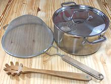

SAFARI
Users
Buying Pasta & Noodles
If buying pasta to be cooked in anything like Italian style, check the ingredients. The only ingredient should be durum wheat semolina. In some cases they also list water, and "enriched" pasta will have a list of vitamins, but durum wheat or durum semolina should be the only significant ingredient. Italian pasta will always be thus, because it's illegal for it to be anything else in Italy. The better grades of American pasta will be the same - unless they are labeled "egg noodles".
Industrial "teflon die" pasta, whether US made or Italian made, is quite affordable in North America. Be prepared to pay up to a US dollar more per pound for the same thing in an Italian specialty market - but you can find more unusual shapes there. Then there is artisnal "bronze die" pasta which goes for a premium price. Figure another US dollar per pound over regular market or Italian market prices.
Unfortunately, the right ingredients don't guarantee good pasta. The worst I've had was from Greece. This is not to condemn all Greek made pasta, but to advise caution. Pasta that's dried too fast will develop stresses and disintegrate when cooked. Take particular care to vet complex pastas like Route (Wagon Wheels). If they have been dried too quickly they will fall apart. Don't depend on these to come out right until you have tested the particular brand.
The other category, Egg Noodles, is used mostly for recipes of German, Polish and Hungarian extraction. In Italy, egg noodles are made fresh, not dried. Egg noodles are usually made from softer wheat flour, but I have encountered some egg pastas from Germany made from durum wheat.
Storing Pasta
Your enemies are moisture, moths and beetles. Pasta must be stored in a cool dry environment, tightly sealed in thick plastic. The critters can bore right through cardboard and thin plastic. I use heat sealed 2 mil polyurethane bags if the manufacturer's packaging seems too delicate, has been opened, is damaged, or is a cardboard box. Given a proper container and suitable conditions, pasta will keep just fine for several years (unless the bugs have been pre-installed). cooking time may increase a little with age.
Tools You Need
 Pots: Good quality stainless steel is what you want to use, not aluminum or steel which can taint the flavor. Cooking pasta for just me (4-1/2 ounces) I use a 3 quart pot. For a pound of pasta a 5 quart pot and for 2 pounds an 8 quart. That's a shade small for 2 pounds, but it takes less room on the stove than my 12 quart. Note that the original Italian pasta pot for "macaroni" (spaghetti) was shallow and very wide.
Pasta Fork: The one in the photo is the one you want. Those with pegs stuck in a paddle are worthless, the pegs fall out within a couple of uses. Someone gave me a stainless steel one, in design very similar to my wooden one, but I use it only for dipping olives out of a drum because I expect the sharp edges will damage the cooked pasta. A plastic one would serve, but I dislike plastic utensils on aesthetic grounds.
Strainer: I use wire strainers which drain very fast.
For one or two servings I use a 7-1/2 inch strainer, for more than that
a 10-1/4 inch strainer.
Cooking Pasta
There are two approved methods, the traditional method and that recommended by major Italian pasta manufacturer Agnesi. The Agnesi method is a little more tolerant of timing.
"Al Dente"
Every cook book dealing with pasta tells you to cook it "al dente", meaning "to the tooth" - but this varies. Italians like their pasta quite firm in the center - just on the tender side of chalky. This point is not easy to achieve - it takes careful testing and fast draining.
Greeks and Turks prefer their pasta fully cooked all they way through with only the vaguest firmness in the center, if any - but not mushy.
Americans of taste prefer an "al dente" in between these two extremes, a point that's a little easier to achieve than Italian perfection - in fact, you probably have a 2 minute or even longer window here, rather than just one minute.
Traditional Method
- Pot: A real key to getting pasta right is to use lots of water. so you need a big pot. Actually, the early traditional pasta cooking pot was very wide and shallow, but our modern stoves won't easily accommodate such a beast, so we usually go for deep.
- Water: The recommended minimum is 4 quarts per pound of pasta. I have successfully cooked 2 pounds of casaricci in just 7 quarts, but for long pasta, and particularly long flat pasta such as fetuccini, more than 4 quarts is better.
- Salt: Pasta cooked without enough salt tastes flat. The correct amount is about 1/2 tablespoon per quart of water. Yes, that's a lot of sodium, but keep in mind nearly all of it is poured out with the water. Don't skimp.
- Oil: About 3 drops of oil on the water will help suppress foaming, and it won't harm the pasta. Oil stays on top and the pasta stays under water. If you have enough water you don't need oil to keep the pasta from sticking.
- Starting: Bring the water to a full rolling boil over highest heat. Get the salt in enough before the pasta to be completely dissolved. Some writers say to put it in at the last moment or it causes a harsh taste. I suspect they use aluminum or steel pots. I have noticed no such effect with my high quality stainless steel pots. The only thing I use an aluminum pot for is emptying ashes from my fireplace, and steel pots are extinct now.
- Adding the Pasta: With the pot at full boil, toss in just a little pasta. With today's multi-ply heavy bottomed pots, tossing in a bunch will cause a violent boil-over. Once the water is settled (a couple of seconds) put in the rest. Stir with your pasta fork a few times to make sure it doesn't stick to the pot or to each other. This is particularly critical with long flat pasta like fetuccini which will stick solid if given a chance. Bring back to a boil as quickly as possible.
- Cooking: Once the pasta is in and not going to stick, cover and turn down the heat until it's at a gentle boil.
- Timing: Do not depend on the cooking time listed on the package, it is nearly always wrong, usually too long. Exact time will depend on shape, manufacturer and age of the pasta. The only way to be sure is to munch a piece and see if it's ready. Test often as it nears done - your margin of error is short.
- Draining: Get the pasta out of the hot water fast. This is best done by having a large mesh strainer over the sink and pouring the water through. In some cases, especially with a small amount of pasta you can use a mesh skimmer.
- DO NOT: Don't rinse the pasta. Don't drain it too thoroughly - it should be distinctly wet. Get it back into the pot.
- Serving: In Italy, the sauce is immediately stirred in (not too much), and the pasta distributed to warm shallow bowls and sent to table before the main course. This is in place of a soup course, soup and pasta are never both served at the same meal. I'm usually serving pasta not as a small separate course but as a larger main course, and I also want more flexibility and personal choice. Drained and back in the pot, I stir in a tiny dash of Extra Virgin Olive Oil to prevent sticking - it takes very little. I serve it bare with a big dollop of sauce in the middle to be incorporated as desired, and grated cheese in a separate bowl. More sauce can be added if desired, as well as more pasta from the pot. In Italy, the Olive Oil is heresy of a degree deserving of hanging - it is claimed the sauce will slip off the pasta. I don't see much of a problem, it works for me, but then I'm a Pagan Barbarian, not a connoisseur. Incidentally, with my method, a big bach of pasta (I recommend Casaricci) can be made up and put in a slow cooker (2 pounds to a 5 quart cooker) set to "keep warm". Buffet guests can scoop some out to a plate or bowl and select from the sauces I've set out in a triple crock warmer. This has been very successful.
Agnesi Method
All considerations from the Traditional Method are followed, except these specific variations.
- When the pasta water has come back to a boil over highest heat, uncover the pot and boil rapidly for 2 minutes only.
- Turn off the heat and stir up the pasta with your pasta fork. Now drape a kitchen towel over the pot and put the lid on tightly.
- Let the pasta sit in the hot water for as long as the package directions say. Since this process is less critical the manufacturer's times will be OK.
- Drain and proceed as per the Traditional Method.